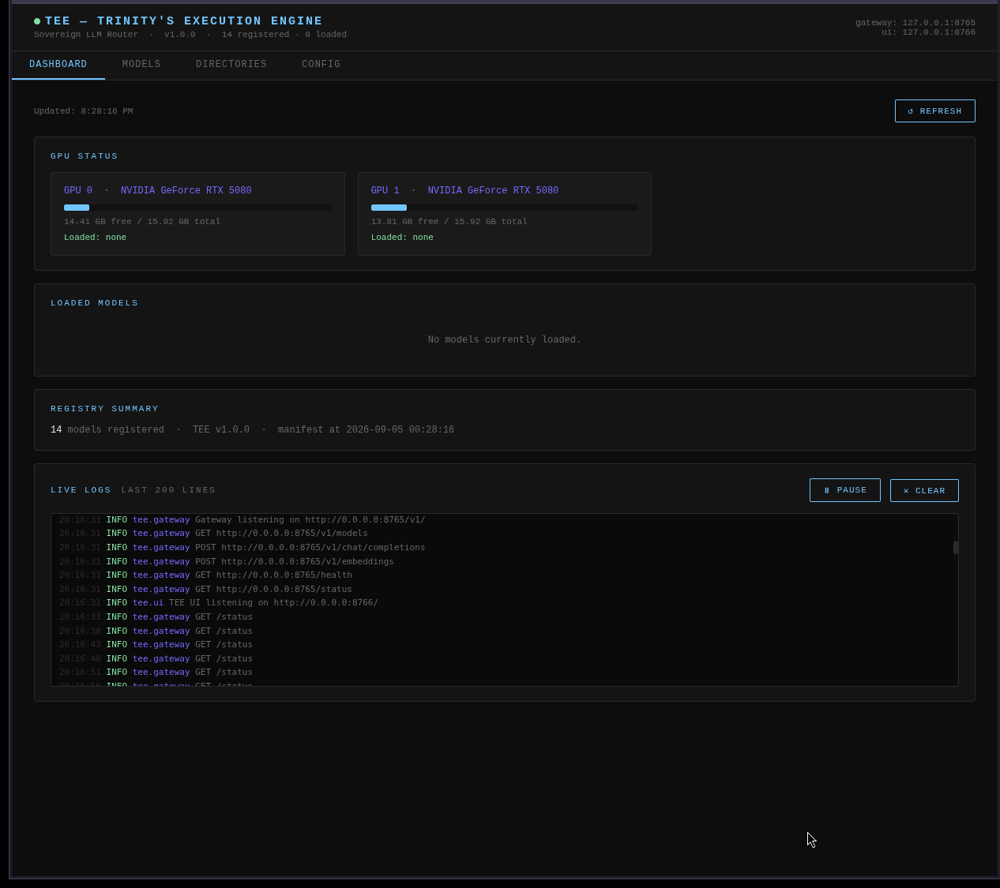
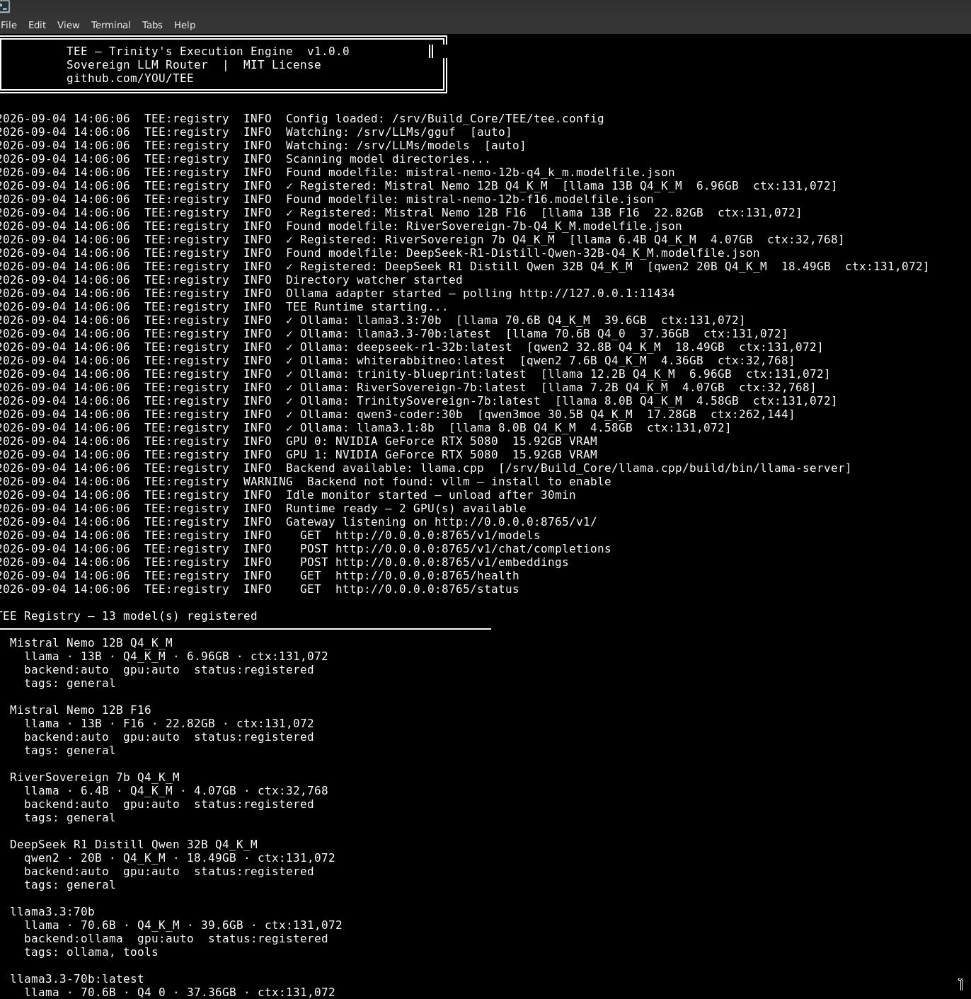
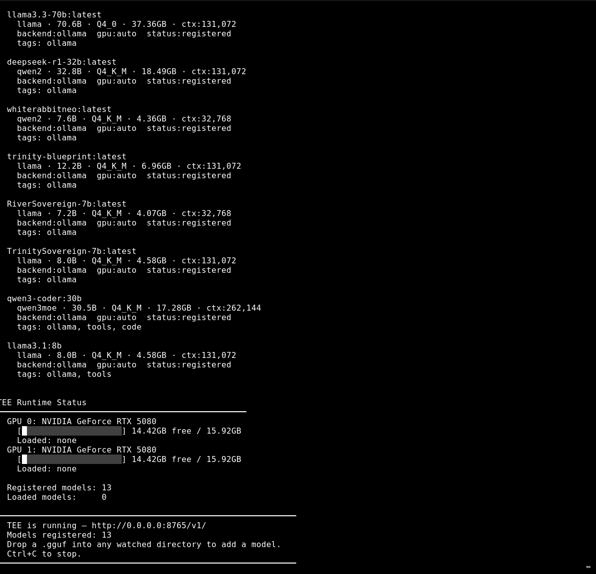

Sovereign UI
See Everything. Control Everything.
TEE ships with a built-in browser dashboard. No Node. No npm. No CDN. One Python file, pure vanilla JS, served locally. Load and unload models from the UI. Download from HuggingFace with live progress bars. Save API keys securely. Watch real VRAM usage and live logs — all from one sovereign interface.

Dashboard — GPU status, real VRAM bars, loaded models

Dashboard — live log stream panel, color-coded by level

Models — full registry, load/unload buttons per model

Models — HuggingFace download panel, live progress bars

Directories — watched model dirs

Config — visual tee.config viewer

Config — API Keys panel, save OpenRouter key from UI

Models — OpenRouter free-tier models in unified registry
CLI

TEE CLI — startup, model registration, Ollama adapter

TEE CLI — full registry, GPU status, ready